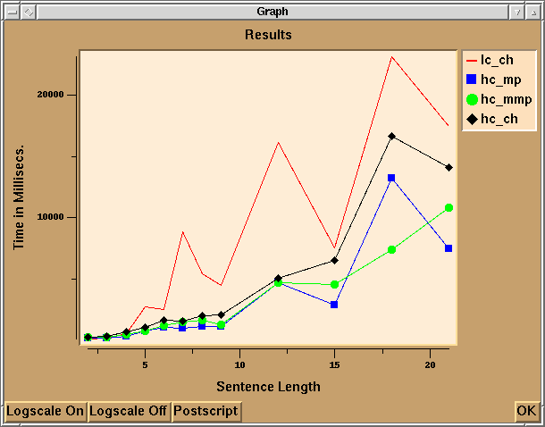

|
Gertjan van Noord |
|
Gertjan van Noord |
This section describes an example session of one of the applications that comes with the standard Hdrug distribution (in the LexRules directory). This is a small experimental parsing/generation system for Dutch. Some of the underlying motivations for this system are described in van Noord and Bouma (1994) . This application is started by the UNIX shell command hdrug -l start. This results in the appearance of the Hdrug widget, which looks like:
At the top of the widget we find a row of menu buttons (the MenuBar). Below the row of buttons two large sub-widgets (the Canvases) are placed. At the bottom we find a few buttons and a few labels (the ButtonBar). The labels indicate the current parser, generator and top-category.
A simple command can be executed by selecting from the MenuBar the item DEBUG followed by STATISTICS (luckily, most menu's will give rise to more interesting actions).
Typically, a NLP system is tested by feeding it example sentences. Let's suppose we want to parse the sentence `jan kust marie' (i.e. the Dutch equivalent of John kisses Mary). We select PARSE-PARSE SENTENCE. This gives rise to the following window:
in which we can either select a sentence from a list of given sentences, or we can type in a new sentence. In this case we type in the new sentence `jan kust marie'. In the Sicstus widget some information concerning the parse process is displayed, such as the current value of the parser, the cputime it takes to parse, and two abbrevations of the semantic representations of the parse-results. Furthermore, two new buttons labelled 1 and 2 are placed on a row below the MenuBar. We will refer to this row as the ObjectBar.
These two buttons refer to the two results of the parse command. Pressing a button from the ObjectBar gives rise to a submenu, indicating some actions we can undertake with the object. For example, selecting 1-VIEW-TK-TREE-D gives rise to the parse tree of the object. This parse-tree is placed on the left canvas:
Note that the nodes of the parse-trees are buttons. Pressing one of the nodes of the parse-trees gives rise to a display of the corresponding feature-structure in the right canvas. Alternatively, if we have enabled the USE NEW CANVAS button at the bottom of the screen, then such feature-structures will appear in a new separate window. If we press the button dominating kust, we obtain the following window:

Pressing the left mouse button on an attribute name hides the corresponding value. Pressing the right mouse button on an attribute name brings the corresponding value back on the screen. Alternatively, we can select 2-VIEW-TK-TREE-Q. This also results in a tree to be printed on the canvas, but this time the tree represents the semantic structure of the second parse result. Playing around with the other view possibilities will give you some idea of some of the possibilities of Hdrug. For example, feature structures, trees and Prolog terms can also be output via CLiG or via LaTeX in an Xdvi window. And, of course, you can also get the output to appear in the standard output window (ASCII art).
The viewing of trees and feature structures can also be combined. If we ask for 2-VIEW-TK-TREE-MATRIX(SYN) then we obtain the most spectacular form of output:
The current application not only can be used for parsing, but
also has a built-in generation component. Selecting
GENERATE-GENERATE LF gives rise to a dialog window in
which you can either type a logical form, or select one from the
existing set of logical forms. Selecting, for example, the logical
form kust(marie,jan), gives rise to two generation results.
Again, these results are available for inspection thru the ObjectBar.
The TEST-SUITE menu contains a number of commands that are useful if we are interested in a comparison of the behavior of a set of different parsers. If we select TEST-SUITE-PARSER SELECTION then we can indicate which parsers we want to compare. Initially all existing parsers are `active'. Suppose that we want to compare only two of the parsers, namely shift_reduce and right_chart. We can achieve this by de-activating each of the other parsers one at the time.
We can now select TEST-SUITE-COMPARE PARSERS. Suppose we want to compare the parsers on the sentence `de man die slaapt slaapt' (the man who sleeps sleeps). This gives rise to all kinds of behavior in the Sicstus widget. In effect Hdrug parses the sentence twice, using each of the active parsers (the shift_reduce parser and the rcp3_dtrs parser). For this sentence the latter parser is fifteen times faster.
Before we want to conclude that this result indicates that indeed the latter parser is faster, we might want to have some more results. In fact, we could decide to parse all of our sentences, and compare the results of this test-suite. This can be achieved by selecting TEST-SUITE-RUN TEST SUITE. Time for coffee. After some time (depending on the financial situation of your employer) your patience is rewarded and Hdrug has finished this laborious task. We can now obtain some statistical information.
For example, we can select the option TEST SUITE-VIEW TEST RESULTS-TOTALS PER #words TK. This produces the window given here:

This shows that our test-suite is not yet large enough and that both parsers are very slow (even if these cputimes are measured on a 486 machine running Linux). Also note that the line for the shift_reduce parser does not cover the same portion of the x-axis as does the other parser. This is because by default there is a time-out (that you can redefine) for each sentence that is to be parsed. Once a parser has reached the time-out for a sentence of length n, then Hdrug refuses to use this parser for sentences longer than n (unless you alter another global variable). It is now somewhat more interesting to get the LaTeX output, as this is organized in a different way. If we select TEST SUITE-VIEW TEST RESULTS-TOTALS PER #words LATEX then we obtain the following table:

Let us now take a look at the VIEW menu. This provides a number of possibilities to view objects, types and (Prolog) predicates, as defined in the grammar files. For example, let's assume we select the option VIEW-PREDICATE-LATEX-TEXT. We are prompted for a predicate name. Let's choose wdel/3. After a short delay the Xdvi window now should look as follows:

Note that you might have to click in the Xdvi window, to update the view in the window. If you happened to quit the Xdvi application before, you can restart it using the Prolog predicate xdvi/0.
As another example, let us now take a look at a tree oriented output thru LaTeX. For this purpose, we select the option VIEW-OBJECT-LATEX-TREE D. We are prompted for the object number. If we select object 2, then the Xdvi window will present the following:

As a final example we want to get a tree in LaTeX format, of which the nodes are feature structures themselves. In order to do this, we have to select the VIEW-OBJECT-LATEX-TREE-MATRIX E option. This produces:

Consider the option VIEW-LEXICAL HIERARCHY-TK which presents the lexicon as a tree, indicating some of the structure of the hierarchical lexicon. This huge tree is placed on the canvas:
Note that you can use the middle mouse button to scroll the canvas more conveniently. Also note that you can adapt the size of the canvas by dragging (with the left mouse button) the border of the two canvases. It is also possible to inspect the definition(s) of a lexical entry. Selecting VIEW-LEXICAL ENTRY-LATEX-MATRIX produces a dialog box asking for a specific lexical entry. Let's assume we select the lexical entry `krant' (newspaper). This produces the output: